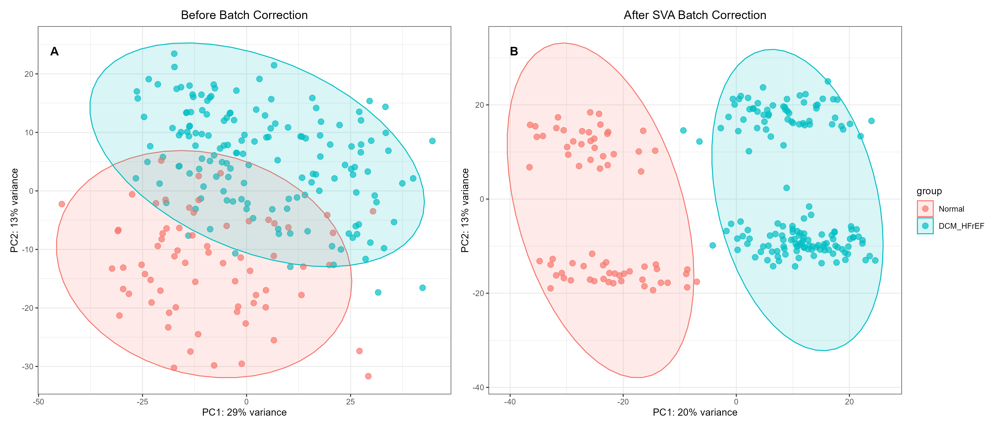

Part 1. Data acquisition and preprocessing
![]()
1 Identification of Potential Targets for ZWHQD
1.1 Active Ingredients Acquisition of ZWHQD
In the present study, the DCABM-TCM database1 was used as the primary source to systematically retrieve blood‑absorbed compounds from each medicinal herb in ZWHQD, along with their chemical structural information. These candidate components were screened according to established criteria, and standardized chemical data were obtained from the [PubChem database] (https://pubchem.ncbi.nlm.nih.gov/)2.
Specifically, we identified and collected blood-absorbed compounds from six medicinal herbs of ZWHQD (see Table 1) by performing Chinese Pinyin-based herb queries in the DCABM-TCM database1. To refine the candidate list, we applied multiple stringent filters: (i) compounds without a valid PubChem Compound Identifier (CID) were discarded; (ii) highly toxic diester diterpenoid alkaloids (e.g., aconitine) derived from Aconiti Radix Lateralis Preparata (Fu Zi) were excluded, because during the standard decoction process of ZWHQD, these compounds undergo substantial hydrolysis, converting into less toxic monoester alkaloids (e.g., benzoylaconine) and further into non‑toxic amine alcohol alkaloids (e.g., aconine), resulting in negligible or undetectable levels in the final decoction.3,4 (iii) ubiquitous endogenous substances, including common saccharides, amino acids, organic acids and their metabolites, as well as other nutritional components, were excluded because they lack target‑specific pharmacological functions and contribute minimally to the therapeutic properties of ZWHQD.
Given the notable pharmacological bioactivity of compounds from Astragalus Membranaceus, we manually supplemented cycloastragenol, an in vivo bioactive metabolite of astragaloside IV with well-ocumented effects5, into the active compound dataset. After completing systematic filtration and manual supplementation, we defined the remaining compounds as the final candidate active ingredients of ZWHQD.
Finally, to characterize the molecular properties of these candidate active ingredients, we queried each qualified compound in PubChem2. For each compound, we extracted core chemical data, including IUPAC names, molecular formulas, molecular weights, SMILES strings, InChI, and InChIKey. Additionally, we downloaded the corresponding SDF files. The SMILES strings (or SDF files) were used for target prediction, and the SDF files also provided the essential 3D conformers for subsequent molecular docking.
| Chinese Pinyin | Latin Name | Role (Chinese Pinyin) | Role (English) | Therapeutic Actions |
|---|---|---|---|---|
| Fu Zi | Aconiti Lateralis Radix Praeparata | Jun | Sovereign | Warms the kidney, assists yang, and promotes diuresis via qi transformation |
| Huang Qi | Astragalus Membranaceus | Chen | Minister | Tonifies qi, consolidates the exterior, and alleviates edema |
| Bai Zhu | Atractylodis Macrocephalae Rhizoma | Chen | Minister | Invigorates the spleen and resolves dampness |
| Fu Ling | Poria | Chen | Minister | Invigorates the spleen and resolves dampness |
| Bai Shao | Paeonia Lactiflora | Zuo | Assistant | Nourishes yin, astringes, and moderates the dryness-heat of the sovereign herb |
| Sheng Jiang | Zingiberis Rhizoma Recens | Zuo | Assistant | Warms the middle energizer and augments yang-warming effects |
1.1.1 Step 1: Load Raw Data from DCABM-TCM
1.1.2 Step 2: Raw Data Preprocessing
Parse compound names, CIDs, formulas, and clean formatting.
source("../scripts/utils.R")
compounds_clean <- compounds_raw %>%
mutate(across(where(is.character), trimws)) %>%
separate_rows(Compounds, sep = "\\|") %>%
mutate(
CID = str_extract(Compounds, "(?<=Pubchem CID:)[^)]+") %>% str_trim(),
DCABM.ID = str_extract(Compounds, "(?<=DCABM ID:)[^)]+") %>% str_trim(),
temp = str_remove(Compounds, "\\s+\\(Pubchem CID:[^)]+\\)")
) %>%
mutate(
temp2 = str_remove(temp, "\\([^)]+\\)$") %>% str_trim(),
Compound = str_remove(temp2, "\\([^)]+\\)$") %>% str_trim(),
Formula = str_match(temp2, "\\(([^)]+)\\)$")[, 2] %>% str_trim()
) %>%
dplyr::select(-Compounds, -temp, -temp2, -DCABM.ID) %>%
mutate(across(where(is.character), trimws))
# Save processed data
save(
compounds_clean,
file = "../data/processed/tcm/02_compounds_clean.RData"
)
write.xlsx(
compounds_clean,
"../data/processed/tcm/02_compounds_clean.xlsx"
)1.1.3 Step 3: Manually Add Cycloastragenol
compounds_add <- compounds_clean %>%
add_row(
Herb.Name.Chinese = "黄芪",
Herb.Name.Pinyin = "HUANG QI",
Herb.Name.English = "Astragali Radix",
Herb.Name.Latin = "Astragalus membranaceus",
Type = "Metabolite",
CID = "13943286",
Compound = "cycloastragenol",
Formula = "C30H50O5"
) %>%
arrange(Herb.Name.Pinyin, CID)
save(
compounds_add,
file = "../data/processed/tcm/03_compounds_add_cycloastragenol.RData"
)1.1.4 Step 4: Filter Invalid & Duplicate Compounds
compounds_filtered <- compounds_add %>%
filter(CID != "-", !is.na(CID), CID != "") %>%
mutate(CID = clean_cids(CID)) %>%
distinct(Herb.Name.Chinese, CID, .keep_all = TRUE) %>%
distinct(Herb.Name.Chinese, Compound, .keep_all = TRUE)
save(
compounds_filtered,
file = "../data/processed/tcm/04_compounds_filtered.RData"
)1.1.5 Step 5: Load Manually Curated Properties & Final Filter
Input: Manual annotated compounds file compounds_properties_manual.xlsx
compounds_manual <- read.xlsx("../data/raw/tcm/compounds_properties_manual.xlsx")
compounds_final_filtered <- compounds_manual %>%
dplyr::filter(Drop == "No") %>%
dplyr::select(
-c(Note, Compound.Toxic, Drop)
) %>%
distinct(Herb.Name.Pinyin, CID, .keep_all = TRUE)
save(
compounds_final_filtered,
file = "../data/processed/tcm/05_compounds_final_filtered.RData"
)1.1.6 Step 6: Batch Retrieve PubChem Annotations
library(future)
library(furrr)
library(progressr)
compounds_pubchem <- compounds_final_filtered %>%
mutate(CID = clean_cids(CID)) %>%
filter(!is.na(CID)) %>%
distinct(CID, .keep_all = TRUE)
properties <- c("IUPACName", "MolecularFormula", "MolecularWeight",
"SMILES", "InChI", "InChIKey")
unique_cids <- unique(compounds_pubchem$CID)
cid_batches <- split(unique_cids, ceiling(seq_along(unique_cids)/20))
plan(multisession, workers = availableCores() - 2)
with_progress({
p <- progressor(steps = length(cid_batches))
chem_info <- future_map_dfr(cid_batches, function(b) {
p()
fetch_batch(properties, b)
})
})
plan(sequential)
# Merge & Finalize
compounds_final <- compounds_pubchem %>%
left_join(chem_info, by = "CID") %>%
select(
# Herb.Name.Chinese,
Herb.Name.Pinyin,
# Herb.Name.English,
Compound.Name, IUPACName, Compound.Category,
MolecularFormula, MolecularWeight, CID, SMILES, InChI, InChIKey
) %>%
mutate(across(where(is.character), trimws))1.1.7 Step 7: Compound Sharing Statistics (Across Herbs)
compound_sharing <- compounds_final %>%
distinct(Herb.Name.Pinyin, CID) %>%
group_by(CID) %>%
summarise(
Herb_Count = n(),
Herbs = paste(unique(Herb.Name.Pinyin), collapse = ", ")
) %>%
filter(Herb_Count >= 2) %>%
arrange(desc(Herb_Count))
# Save all final results
save(
compounds_final, compound_sharing,
file = "../data/processed/tcm/06_compounds_final.RData"
)1.1.8 Step 8: Download SDF files
1.1.9 Step 9: Export Final Tables
herbs <- read.xlsx("../results/tables/main/Table1_Herbs_of_Zhenwu_Huangqi_Decoction.xlsx", sep.names = " ")
# Table S1
write.xlsx(
list(
Herbs = herbs,
Raw_Compounds = compounds_clean,
Final_Active_Compounds = compounds_final
),
file = "../results/tables/supplementary/Table_S1_Herbs_and_Compounds_of_Zhenwu_Huangqi_Decoction.xlsx",
overwrite = TRUE
)1.1.10 Step 10: Results
All identified active compounds are presented in the Final_Active_Compounds worksheet of Supplementary Table S1 (../results/tables/supplementary/Table_S1_Herbs_and_Compounds_of_Zhenwu_Huangqi_Decoction.xlsx).
1.2 Targets Prediction for ZWHQD
we predicted potential targets of the blood-absorbed compounds using seven authoritative online platforms, including three classic mainstream databases and four additional professional target fishing servers: BATMAN-TCM 2.06, SuperPred 3.07, SwissTargetPrediction8, PharmMapper9,10, TargetNet11, PPB312, and SEA13.
Subsequently, we retained high‑confidence target candidates using the following thresholds: score ≥0.84 for BATMAN‑TCM 2.0; probability ≥70% and accuracy ≥90% for SuperPred; probability ≥0.1 for SwissTargetPrediction; z‑score >0 and Norm Fit >0.9 for PharmMapper; probability ≥0.5 for TargetNet; single human protein for PPB3; and P Value < 1e-10, Z.Score > 5 and Max.Tc >0.5 for SEA, all predicted targets restricted to human origin only.
To ensure analytical uniformity and interoperability, we then mapped and standardized all retained candidates to official human gene symbols using the UniProt knowledgebase (https://www.uniprot.org/). We confirmed non‑standard names or aliases, excluded targets that could not be standardized, and removed redundant entries.
Finally, we refined the target list through multi‑tool voting combined with literature evidence: we preferentially retained targets appearing in at least two tools, and we also considered single‑tool high‑confidence targets when supported by published literature.
1.2.1 Step 1: BATMAN-TCM Targets
We retrieved target predictions for each blood‑absorbed compound from the BATMAN‑TCM 2.06 using the compound PubChem CID strings as input.
output:
batman_target_known
../data/raw/tcm/batman/batman_target_known.RDatabatman_target_pred
../data/raw/tcm/batman/batman_target_pred.RData
rm(list = ls())
source("../scripts/utils.R")
load("../data/processed/tcm/06_compounds_final.RData")
load("../data/raw/tcm/batman/batman_target_known.RData")
load("../data/raw/tcm/batman/batman_target_pred.RData")
# Known Targets
compound_target_known_batman <- compounds_final %>%
left_join(batman_target_known, by = "CID", relationship = "many-to-many") %>%
select(-ends_with(".x")) %>%
rename_with(~ str_replace(., "\\.y$", ""), ends_with(".y")) %>%
distinct(Herb.Name.Pinyin, CID, Uniprot.ID, .keep_all = TRUE) %>%
filter(!is.na(Symbol))
# Predicted Targets (Score ≥ 0.84)
compound_target_pred_batman <- compounds_final %>%
left_join(batman_target_pred, by = "CID", relationship = "many-to-many") %>%
select(-ends_with(".x")) %>%
rename_with(~ str_replace(., "\\.y$", ""), ends_with(".y")) %>%
distinct(Herb.Name.Pinyin, CID, Uniprot.ID, .keep_all = TRUE) %>%
filter(!is.na(Symbol), Score >= 0.84)
save(
compound_target_known_batman,
compound_target_pred_batman,
file = "../data/processed/tcm/07_batman_targets.RData"
)1.2.2 Step 2: Super-Pred Targets
rm(list = ls())
source("../scripts/utils.R")
load("../data/processed/tcm/06_compounds_final.RData")
load("../data/raw/uniprot/uniprot_human_reviewed.RData")
# Known targets
known <- read_compound_target("../data/raw/tcm/super/known") %>%
select(CID, Protein.name = `Target Name`, Uniprot.ID = `UniProt ID`)
# Predicted targets (Prob > 70, Model Accuracy > 90)
pred <- read_compound_target("../data/raw/tcm/super") %>%
filter(Probability >= 70, `Model accuracy` >= 90) %>%
select(CID, Protein.name = `Target Name`, Uniprot.ID = `UniProt ID`)
# Merge & Annotate
process_super <- function(df) {
df %>%
left_join(uniprot_human_reviewed, by = c("Uniprot.ID" = "Entry")) %>%
filter(!is.na(Gene.Names.primary)) %>%
mutate(Symbol = Gene.Names.primary) %>%
distinct(CID, Uniprot.ID, .keep_all = TRUE)
}
known_clean <- process_super(known)
pred_clean <- process_super(pred)
# Merge with compounds
compound_target_known_super <- compounds_final %>%
left_join(known_clean, by = "CID", relationship = "many-to-many") %>%
distinct(Herb.Name.Pinyin, CID, Uniprot.ID, .keep_all = TRUE) %>%
filter(!is.na(Symbol))
compound_target_pred_super <- compounds_final %>%
left_join(pred_clean, by = "CID", relationship = "many-to-many") %>%
distinct(Herb.Name.Pinyin, CID, Uniprot.ID, .keep_all = TRUE) %>%
filter(!is.na(Symbol))
# Save
save(
compound_target_known_super,
compound_target_pred_super,
file = "../data/processed/tcm/08_super_targets.RData"
)1.2.3 Step 3: SwissTargetPrediction Targets
rm(list = ls())
source("../scripts/utils.R")
load("../data/processed/tcm/06_compounds_final.RData")
load("../data/raw/uniprot/uniprot_human_reviewed.RData")
result <- read_compound_target("../data/raw/tcm/swiss") %>%
filter(`Probability*` > 0.10) %>%
separate_rows(`Common name`, `Uniprot ID`, sep = " ") %>%
mutate(
CID = clean_cids(CID),
Uniprot.ID = gsub("[[:space:]]", "", `Uniprot ID`),
Symbol = gsub("[[:space:]]", "", `Common name`)
) %>%
select(CID, Uniprot.ID) %>%
distinct(CID, Uniprot.ID, .keep_all = TRUE) %>%
left_join(uniprot_human_reviewed, by = c("Uniprot.ID" = "Entry")) %>%
filter(!is.na(Gene.Names.primary))
compound_target_pred_swiss <- compounds_final %>%
left_join(result, by = "CID", relationship = "many-to-many") %>%
filter(!is.na(Gene.Names.primary)) %>%
dplyr::rename(Symbol = Gene.Names.primary) %>%
distinct(Herb.Name.Pinyin, CID, Symbol, .keep_all = TRUE)
# Save
save(
compound_target_pred_swiss,
file = "../data/processed/tcm/09_swiss_targets.RData"
)1.2.4 Step 4: PharmMapper Targets
rm(list = ls())
source("../scripts/utils.R")
load("../data/processed/tcm/06_compounds_final.RData")
load("../data/raw/uniprot/uniprot_human_reviewed.RData")
result <- read_compound_target2("../data/raw/tcm/pharm",skip_row = 1)
result <- result %>%
dplyr::filter(grepl("_HUMAN", Uniplot),zscore>0, `Norm Fit`>0.9) %>%
dplyr::select(CID, Uniplot) %>%
distinct(CID, Uniplot, .keep_all = TRUE) %>%
left_join(uniprot_human_reviewed, by = c("Uniplot" = "Entry.Name")) %>%
filter(!is.na(Gene.Names.primary))
compound_target_pred_pharm <- compounds_final %>%
left_join(result, by = "CID", relationship = "many-to-many") %>%
filter(!is.na(Gene.Names.primary)) %>%
dplyr::rename(Symbol = Gene.Names.primary) %>%
distinct(Herb.Name.Pinyin, CID, Symbol, .keep_all = TRUE) %>%
dplyr::rename(Uniprot.ID = Entry)
# save
save(
compound_target_pred_pharm,
file = "../data/processed/tcm/10_pharm_targets.RData"
)1.2.5 Step 5: TtargetNet Targets
rm(list = ls())
source("../scripts/utils.R")
load("../data/processed/tcm/06_compounds_final.RData")
load("../data/raw/uniprot/uniprot_human_reviewed.RData")
query <- read.xlsx("../data/raw/tcm/targetnet/query.xlsx")
cids<- query$CID
col_names <- c("Uniprot.ID","Protein",cids)
result <- read.xlsx("../data/raw/tcm/targetnet/results.xlsx")
result <- result %>%
dplyr::select(-Details) %>%
setNames(col_names) %>%
pivot_longer(
cols = -c(Uniprot.ID, Protein),
names_to = "CID",
values_to = "Probability"
) %>%
dplyr::filter(!is.na(Probability), Probability > 0.5) %>%
mutate(CID = as.numeric(CID)) %>%
arrange(CID,Probability) %>%
mutate(CID = as.character(CID)) %>%
dplyr::select(CID,Uniprot.ID,Probability) %>%
distinct(CID, Uniprot.ID, .keep_all = TRUE) %>%
left_join(uniprot_human_reviewed, by = c("Uniprot.ID" = "Entry")) %>%
filter(!is.na(Gene.Names.primary))
compound_target_pred_targetnet <- compounds_final %>%
left_join(result, by = "CID", relationship = "many-to-many") %>%
filter(!is.na(Gene.Names.primary)) %>%
dplyr::rename(Symbol = Gene.Names.primary) %>%
distinct(Herb.Name.Pinyin, CID, Symbol, .keep_all = TRUE)
# Save
save(
compound_target_pred_targetnet,
file = "../data/processed/tcm/11_targetnet_targets.RData"
)1.2.6 Step 6: PPB3 Targets
rm(list = ls())
source("../scripts/utils.R")
load("../data/processed/tcm/06_compounds_final.RData")
load("../data/raw/uniprot/uniprot_human_reviewed.RData")
result <- read_compound_target("../data/raw/tcm/ppb3")
result <- result %>%
dplyr::filter( `Target Type` == 'SINGLE PROTEIN', `Target Organism` == "Homo sapiens")
library(httr)
library(jsonlite)
chembl_ids <- unique(result$`Target ID`)
uniprot_list <- sapply(chembl_ids, chembl_to_uniprot)
save(uniprot_list,file = "../data/raw/tcm/ppb3/uniprot_list.Rdata")
# load("../data/raw/tcm/ppb3/uniprot_list.Rdata")
df <- data.frame(
Chembl.ID = names(uniprot_list),
Uniprot.ID = sapply(uniprot_list, `[`, 1),
row.names = NULL
)
result <- result %>%
left_join(df, by=c("Target ID" = "Chembl.ID")) %>%
distinct(CID, Uniprot.ID, .keep_all = TRUE) %>%
left_join(uniprot_human_reviewed, by = c("Uniprot.ID" = "Entry")) %>%
filter(!is.na(Gene.Names.primary))
compound_target_pred_ppb3 <- compounds_final %>%
left_join(result, by = "CID", relationship = "many-to-many") %>%
filter(!is.na(Gene.Names.primary)) %>%
dplyr::rename(Symbol = Gene.Names.primary) %>%
distinct(Herb.Name.Pinyin, CID, Symbol, .keep_all = TRUE) %>%
dplyr::select(-c(Rank,`Nearest Neighbors`))
# Save
save(
compound_target_pred_ppb3,
file = "../data/processed/tcm/12_ppb3_targets.RData"
)1.2.7 Step 7: SEA Targets
rm(list = ls())
source("../scripts/utils.R")
load("../data/processed/tcm/06_compounds_final.RData")
load("../data/raw/uniprot/uniprot_human_reviewed.RData")
result <- read.csv("../data/raw/tcm/sea/sea-results.xls") %>%
mutate(CID = as.numeric(gsub("compound","",Query.ID)), .before = 1) %>%
arrange(CID) %>%
mutate(CID = as.character(CID)) %>%
dplyr::select(-Query.ID) %>%
dplyr::filter(
grepl("_HUMAN", Target.ID),
P.Value < 1e-10,
Max.Tc > 0.5,
Z.Score > 5
) %>%
distinct(CID, Target.ID, .keep_all = TRUE) %>%
left_join(uniprot_human_reviewed, by = c("Target.ID" = "Entry.Name")) %>%
filter(!is.na(Gene.Names.primary))
compound_target_pred_sea <- compounds_final %>%
left_join(result, by = "CID", relationship = "many-to-many") %>%
filter(!is.na(Gene.Names.primary)) %>%
dplyr::rename(Symbol = Gene.Names.primary) %>%
distinct(Herb.Name.Pinyin, CID, Symbol, .keep_all = TRUE) %>%
dplyr::rename(Uniprot.ID = Entry)
# save
save(
compound_target_pred_sea,
file = "../data/processed/tcm/13_sea_targets.RData"
)1.2.8 Step 8: Merge All Targets & Deduplicate
rm(list = ls())
# Common Columns
cnames <- c(
# "Herb.Name.Chinese",
"Herb.Name.Pinyin",
# "Herb.Name.English",
# "Herb.Name.Latin",
"Compound.Name", "IUPACName", "Compound.Category",
"MolecularFormula", "MolecularWeight", "CID",
"SMILES", "InChI", "InChIKey", "Symbol", "Uniprot.ID"
)
load("../data/processed/tcm/07_batman_targets.RData")
load("../data/processed/tcm/08_super_targets.RData")
load("../data/processed/tcm/09_swiss_targets.RData")
load("../data/processed/tcm/10_pharm_targets.RData")
load("../data/processed/tcm/11_targetnet_targets.RData")
load("../data/processed/tcm/12_ppb3_targets.RData")
load("../data/processed/tcm/13_sea_targets.RData")
# Known Targets
compound_target_known <- rbind(
compound_target_known_batman[, cnames],
compound_target_known_super[, cnames]
) %>%
distinct(Herb.Name.Pinyin, CID, Symbol, .keep_all = TRUE) %>%
filter(!is.na(Symbol))
# Predicted Targets
pred_batman <- compound_target_pred_batman[, cnames] %>% mutate(database = "BATMAN")
pred_super <- compound_target_pred_super[, cnames] %>% mutate(database = "SuperPred")
pred_swiss <- compound_target_pred_swiss[, cnames] %>% mutate(database = "Swiss")
pred_pharm <- compound_target_pred_pharm[, cnames] %>% mutate(database = "PharmMapper")
pred_targetnet <- compound_target_pred_targetnet[, cnames] %>% mutate(database = "TargetNet")
pred_ppb3 <- compound_target_pred_ppb3[, cnames] %>% mutate(database = "PPB3")
pred_sea <- compound_target_pred_swiss[, cnames] %>% mutate(database = "SEA")
# all targets
compound_target_pred_all <- rbind(
pred_batman,
pred_super,
pred_swiss,
pred_pharm,
pred_targetnet,
pred_ppb3,
pred_sea
) %>%
distinct(Herb.Name.Pinyin, CID, Symbol, database, .keep_all = TRUE) %>%
filter(!is.na(Symbol))
# counts
compound_target_pred_count <- compound_target_pred_all %>%
group_by(Herb.Name.Pinyin, CID, Symbol) %>%
summarise(
database_count = n_distinct(database),
Uniprot.ID = first(Uniprot.ID),
across(-c(database, Uniprot.ID), first),
.groups = "drop"
)
# retain targets predicted by ≥2 databases
compound_target_pred_filtered <- compound_target_pred_count %>%
dplyr::filter(database_count >= 2) %>%
dplyr::select(all_of(cnames)) %>%
distinct()
# Final predicted target
compound_target_pred <- compound_target_pred_filtered
load("../data/raw/uniprot/uniprot_human_reviewed.RData")
# All Targets
compound_target_final <- rbind(compound_target_known, compound_target_pred) %>%
distinct(Herb.Name.Pinyin, CID, Symbol, .keep_all = TRUE) %>%
left_join(uniprot_human_reviewed, by = c("Uniprot.ID" = "Entry")) %>%
dplyr::select(-Reviewed, -Entry.Name)
save(
compound_target_final,
file = "../data/processed/tcm/14_compound_target_final.RData"
)
## Export Final Supplementary Table
compound_target_export <- compound_target_final %>%
dplyr::select(-Sequence)1.2.9 Step 9: Targets Statistics
# Create summary table with statistics for each database and final results
summary_table <- tibble(
# Database name (Known / Predicted)
Database = c(
"BATMAN-TCM (Known)",
"SuperPred (Known)",
"BATMAN-TCM (Predicted)",
"SuperPred (Predicted)",
"SwissTargetPrediction",
"PharmMapper",
"TargetNet",
"PPB3",
"SEA",
"Final Integrated Results"
),
# Number of unique compounds with targets (CID)
'Number of compounds with targets' = c(
n_distinct(compound_target_known_batman$CID),
n_distinct(compound_target_known_super$CID),
n_distinct(compound_target_pred_batman$CID),
n_distinct(compound_target_pred_super$CID),
n_distinct(compound_target_pred_swiss$CID),
n_distinct(compound_target_pred_pharm$CID),
n_distinct(compound_target_pred_targetnet$CID),
n_distinct(compound_target_pred_ppb3$CID),
n_distinct(compound_target_pred_sea$CID),
n_distinct(compound_target_final$CID)
),
# Number of unique targets based on UniProt ID
`Targets Count` = c(
n_distinct(compound_target_known_batman$Uniprot.ID),
n_distinct(compound_target_known_super$Uniprot.ID),
n_distinct(compound_target_pred_batman$Uniprot.ID),
n_distinct(compound_target_pred_super$Uniprot.ID),
n_distinct(compound_target_pred_swiss$Uniprot.ID),
n_distinct(compound_target_pred_pharm$Uniprot.ID),
n_distinct(compound_target_pred_targetnet$Uniprot.ID),
n_distinct(compound_target_pred_ppb3$Uniprot.ID),
n_distinct(compound_target_pred_sea$Uniprot.ID),
n_distinct(compound_target_final$Uniprot.ID)
)
)
# Export table to Excel for manuscript supplementary materials
save(summary_table, file = "../data/processed/tcm/15_target_statistics.Rdata")
write.xlsx(
list(
BATMAN_Known_Tagets = compound_target_known_batman,
BATMAN_Pred_Tagets = compound_target_pred_batman,
Super_Known_Tagets = compound_target_known_super,
Super_Pred_Tagets = compound_target_pred_super,
Swiss_Pred_Tagets = compound_target_pred_swiss,
Pharm_Pred_Tagets = compound_target_pred_pharm,
TargetNet_Pred_Tagets = compound_target_pred_targetnet,
PPB3_Pred_Tagets = compound_target_pred_ppb3,
SEA_Pred_Tagets = compound_target_pred_sea,
Final_Known = compound_target_known,
Final_Predicted = compound_target_pred,
Final_All = compound_target_export,
Target_Statistics = summary_table
),
"../results/tables/supplementary/Table_S2_Compound_Targets.xlsx"
)1.2.10 Step 10: Results
We further collected putative target proteins of these active ingredients from seven online databases. All retrieved target entries were standardized to official gene Symbol IDs according to the UniProt database. Ultimately, a total of 811 candidate genes corresponding to 98 effective compounds were obtained for the subsequent mechanistic exploration of ZWHQD, as summarized in the Target_Statistics worksheet of Supplementary Table S2.
| Database | Number of compounds with targets | Targets Count |
|---|---|---|
| BATMAN-TCM (Known) | 22 | 207 |
| SuperPred (Known) | 14 | 30 |
| BATMAN-TCM (Predicted) | 36 | 100 |
| SuperPred (Predicted) | 101 | 211 |
| SwissTargetPrediction | 80 | 668 |
| PharmMapper | 100 | 111 |
| TargetNet | 99 | 198 |
| PPB3 | 91 | 160 |
| SEA | 33 | 98 |
| Final Integrated Results | 98 | 811 |
3 Preprocessing of the GSE141910 Dataset (for DEG & WGCNA & ML)
We corrected for batch effects on the normalized count matrix using the ComBat‑seq function from the sva package14.
3.1 Step 1: Loading Raw Counts & FPKM
rm(list=ls())
# Loading raw data
load("../data/raw/geo/gse141910_raw.RData")
# Extracting expression matrix and phenotype
counts <- gse141910_counts_raw %>%
column_to_rownames("GeneID")
pheno <- gse141910_pheno_raw
# Adding LVEF information
pheno_lvef <- gse141910_pheno_raw_with_lvef
pheno <- pheno %>%
left_join(pheno_lvef, by = c("title" = "sample_name")) %>%
column_to_rownames("geo_accession")3.2 Step 2: Filtering Normal / DCM_HFrEF Samples
# Filtering Pheno Data of Good Samples
pheno <- pheno[rownames(pheno) %in% colnames(counts),]
Normal <- pheno$etiology == "NF" & !is.na(pheno$LVEF) & pheno$LVEF >= 0.5 & pheno$LVEF <= 0.7
DCM_HFrEF <- pheno$etiology == "DCM" & !is.na(pheno$LVEF) & pheno$LVEF <= 0.4
keep_samples <- rownames(pheno)[Normal | DCM_HFrEF]
pheno <- pheno[keep_samples, ]
counts_keep <- counts[, keep_samples]
pheno$group <- factor(ifelse(pheno$etiology == "NF", "Normal", "DCM_HFrEF"), levels = c("Normal","DCM_HFrEF"))3.3 Step 3: Gene Annotation
# Obtaining gene length from TxDb
txdb <- TxDb.Hsapiens.UCSC.hg38.knownGene
trans_len <- transcriptLengths(txdb, with.cds_len = TRUE)
gene_len_vec_txdb <- trans_len %>%
filter(!is.na(tx_len)) %>%
group_by(gene_id) %>%
summarise(Length_bp = max(tx_len, na.rm = TRUE)) %>%
ungroup() %>%
pull(Length_bp, name = gene_id)
# Convert Entrez IDs to official HGNC gene symbols
entrez <- rownames(counts_keep)
# Obtain EntrezID with length
has_len <- entrez %in% names(gene_len_vec_txdb)
# Checking the matching rate
cat("TxDb matching rate：", round(100 * sum(has_len) / nrow(counts_keep), 2), "%\n")
# Retain genes with length
entrez_filt <- entrez[has_len]
sym <- mapIds(
org.Hs.eg.db,
keys = entrez_filt,
keytype = "ENTREZID",
column = "SYMBOL",
multiVals = "first"
)
# Create annotation data frame
gene_anno_filt <- data.frame(
EntrezID = entrez_filt,
Symbol = sym,
row.names = entrez_filt,
stringsAsFactors = FALSE
) %>%
drop_na(Symbol)
# Subset count matrix to keep only annotated genes
counts_anno_filt <- counts_keep[gene_anno_filt$EntrezID, ]3.4 Step 4: Rename the row name from EntrezID to Symbol
3.5 Step 5: Merge duplicate genes (take the average)
3.6 Step 6: Filter low expression genes based on CPM
3.7 Step 7: compute_fpkm_from_counts
compute_fpkm_from_counts <- function(count_mat, gene_anno, gene_len_vec, lib_size_mil) {
anno_len <- gene_anno %>%
mutate(Length = gene_len_vec[as.character(EntrezID)]) %>%
group_by(Symbol) %>%
summarise(Length_bp = mean(Length, na.rm = TRUE))
anno_len <- anno_len[match(rownames(count_mat), anno_len$Symbol), ]
if(any(is.na(anno_len$Length_bp))) {
warning("Some Symbols have no length info, set to median")
anno_len$Length_bp[is.na(anno_len$Length_bp)] <- median(anno_len$Length_bp, na.rm = TRUE)
}
gene_len_kb <- anno_len$Length_bp / 1000
names(gene_len_kb) <- anno_len$Symbol
fpkm <- sweep(count_mat, 2, lib_size_mil, "/")
fpkm <- sweep(fpkm, 1, gene_len_kb, "/")
return(fpkm)
}
counts_final <- counts_low_filt[rownames(counts_low_filt) %in% gene_anno_filt$Symbol, ]
lib_size_mil_before_filter <- colSums(counts_dup_filt) / 1e6
# fpkm_final
fpkm_final <- compute_fpkm_from_counts(
count_mat = counts_final,
gene_anno = gene_anno_filt,
gene_len_vec = gene_len_vec_txdb,
lib_size_mil = lib_size_mil_before_filter[colnames(counts_final)]
) %>% as.data.frame()3.8 Step 8: SVA Batch Correction for Counts
# log2 (CPM+1) matrix (using TMM normalization factor)
dge_norm <- calcNormFactors(DGEList(counts_final))
logcpm <- cpm(dge_norm, log = TRUE, prior.count = 1) # log2(CPM+1)
# Design Matrix
mod <- model.matrix(~ group + age + race + gender, pheno)
mod0 <- model.matrix(~ 1, pheno)
# Estimate the number of potential factors
n.sv <- num.sv(as.matrix(logcpm), mod, method="leek")
# svobj <- svaseq(as.matrix(logcpm), mod, mod0, n.sv = n.sv)
# counts_corr <- t( t(logcpm) - svobj$sv %*% solve(t(svobj$sv) %*% svobj$sv) %*% t(svobj$sv) %*% t(cpms_log) )
#
# # Add SVA to pheno
# svdf <- svobj$sv
# colnames(svdf) <- paste0("SVA",1:ncol(svdf))
# pheno_final <- cbind(pheno, svdf)
if (n.sv > 0) {
# SVA
svobj <-sva(as.matrix(logcpm), mod, mod0, n.sv = n.sv)
# Correct logCPM
expr_counts_corr <- removeBatchEffect(logcpm, covariates = svobj$sv, design = mod)
# Correct logFPKM
logfpkm <- log2(fpkm_final + 1)
expr_fpkm_corr <- removeBatchEffect(logfpkm, covariates = svobj$sv, design = mod)
# 将 SVA 因子添加到表型数据中
svdf <- as.data.frame(svobj$sv)
colnames(svdf) <- paste0("SVA", 1:ncol(svdf))
pheno_final <- cbind(pheno, svdf)
} else {
expr_counts_corr <- logcpm
expr_fpkm_corr <- log2(fpkm_final + 1)
pheno_final <- pheno
warning("No significant surrogate variables found. Proceeding without batch correction.")
}3.9 Step 8: Saving data for DEG & WGCNA & Immune infiltration analysis & ML)
proc_dir <- "../data/processed/geo/GSE141910"
if (!dir.exists(proc_dir)) dir.create(proc_dir, recursive = TRUE)
# Original Counts, ie. `counts_final` for DEG
# Corrected log2(CPM+1)/log2(FPKM+1), ie. `expr_counts_corr` / `expr_fpkm_corr` for WGCNA
# Corrected log2(FPKM+1), ie. `expr_fpkm_corr` for Immune infiltration analysis & machine learning )
# Save
save(
expr_counts_corr,
expr_fpkm_corr,
counts_final,
pheno_final,
fpkm_final,
file = file.path(proc_dir, "GSE141910_preprocessed_final.RData")
)3.10 Step 9: PCA Before / After Correction
dds <- DESeqDataSetFromMatrix(
countData = counts_final,
colData = pheno_final,
design = ~ group
)
vsd <- vst(dds, blind = FALSE)
# PCA plot BEFORE batch correction
pca_before <- plotPCA(vsd, intgroup = "group", returnData = TRUE)
var_before <- round(100 * attr(pca_before, "percentVar"))
p_before <- ggplot(pca_before, aes(x = PC1, y = PC2, color = group, fill = group)) +
geom_point(size = 2.5, alpha = 0.7) +
stat_ellipse(type = "t", level = 0.95, geom = "polygon", alpha = 0.15) +
xlab(paste0("PC1: ", var_before[1], "% variance")) +
ylab(paste0("PC2: ", var_before[2], "% variance")) +
ggtitle("Before Batch Correction") +
theme_bw(base_size = 10) +
labs(tag = "A") +
theme(
plot.tag.position = c(0.10, 0.90),
plot.tag = element_text(size = 12, face = "bold"),
plot.title = element_text(hjust = 0.5),
legend.position = "none"
)
# PCA plot AFTER batch correction
assay(vsd) <- expr_counts_corr
pca_after <- plotPCA(vsd, intgroup = "group", returnData = TRUE)
var_after <- round(100 * attr(pca_after, "percentVar"))
p_after <- ggplot(pca_after, aes(x = PC1, y = PC2, color = group, fill = group)) +
geom_point(size = 2.5, alpha = 0.7) +
stat_ellipse(type = "t", level = 0.95, geom = "polygon", alpha = 0.15) +
xlab(paste0("PC1: ", var_after[1], "% variance")) +
ylab(paste0("PC2: ", var_after[2], "% variance")) +
ggtitle("After SVA Batch Correction") +
theme_bw(base_size = 10) +
labs(tag = "B") +
theme(
plot.tag.position = c(0.10, 0.90),
plot.tag = element_text(size = 12, face = "bold"),
plot.title = element_text(hjust = 0.5),
legend.position = "right"
)
# Combine plots with shared legend and add internal A/B tags
p_combined <- (p_before + p_after) +
plot_annotation(tag_levels = "A") +
theme(
plot.tag.position = c(0.10, 0.90),
plot.tag = element_text(size = 12, face = "bold")
)
ggsave("Figure_S1_A_PCA_counts_before.pdf", p_before, path = "../results/figures/supplementary", width=7, height=5)
ggsave("Figure_S1_B_PCA_counts_after.pdf", p_after, path = "../results/figures/supplementary", width=7, height=5)
# Save combined PCA plot
ggsave(
"Figure_S1_PCA_Combined_Before_After.pdf",
plot = p_combined,
path = "../results/figures/supplementary",
width = 14,
height = 6,
dpi = 300
)
ggsave(
filename = "Figure_S1_PCA_Combined_Before_After.png",
plot = p_combined,
path = "../results/figures/supplementary",
width = 14,
height = 6,
dpi = 300
)3.11 Step 10: Results
Figures

| Home | About | Methods | Results | Next |